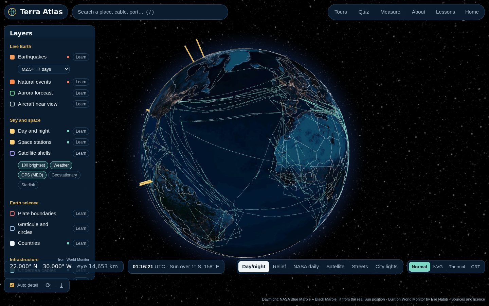

A living Earth you can hold
Spin a real-time 3D globe, zoom from orbit down to your street, and learn how the planet works — earthquakes, storms, satellites, aurora, the cables under the sea and the straits every ship squeezes through.
Live data straight from USGS, NASA, NOAA, CelesTrak and Open-Meteo — no account, no server.
Everything on one globe
World Monitor’s curated infrastructure and geopolitics layers, joined by live public feeds and teaching layers. Each one has a “Learn” card that explains what you are seeing and how it is measured.
Ways to use it
The globe is the heart of the site. The pages around it teach, explain, and let you take it offline.
Explore the live Earth
Six base maps — real day and night, relief, city lights, NASA’s picture of the planet from yesterday, satellite tiles down to street level, and street maps. Click anything for field notes, a country for its fact card, or bare ground for the weather and the nearest plate boundary.

Every flight in the sky
Tens of thousands of live aircraft as plane pointers on their real headings. Click one for a seatback-style flight view: route, altitude, speed, outside temperature, time to go and a photo of the aircraft.
Live cameras
Thousands of public road cameras from California, New York City, London and Hong Kong — live video where the agency streams it — plus mapped licence-plate readers from OpenStreetMap.
Trace how any place is connected
Click a spot and watch its links draw themselves: the nearest internet exchanges, the undersea cable landing and every coast it reaches, power stations, the airport, public cameras and radio receivers, and a beam to every satellite overhead — each with its light-speed delay.
Time machine
Run the planet at up to six hours a second or wind it back a week: the Sun, satellites and space stations move, and earthquakes replay in order.
Wind, launches and alerts
Streaks drifting with the real wind over a temperature map, every upcoming rocket launch with a live countdown and webcast, and UN–EU disaster alerts.
Overwatch HUD and Area scan
A heads-up display over the globe. Press S and it scans everything public around the crosshair: aircraft overhead, the satellites that can see that spot right now, cameras, internet buildings, power plants, radio receivers and the weather.
NASA overlays
Wrap the globe in today’s clouds, rain falling in the last half hour, fires, night lights, ocean temperature, smoke or snow.
The connected planet
10,700 power plants, the buildings where internet networks meet, shortwave receivers you can listen to, and live ships.
Crime maps
Official incident reports for Chicago, San Francisco, New York, Los Angeles and all of England, Wales and Northern Ireland — as 3D hexagon columns and pins, with a lesson on reading them fairly.
News pins and the Live ticker
Places in the news in the last 24 hours with their headlines, plus a live ticker of earthquakes, storms and flight emergencies you can tour hands-free.
Take a guided tour
Ring of Fire, arteries of the internet, chokepoints of trade, orbits, seasons, and the physical supply chain of AI.
Play “Where on Earth?”
Eight places, one click each. Closer guesses score more — a quick way to learn the map.
Measure anything
Great-circle distance, compass bearing, and how long light takes to cross it in an optical fibre.
Change the optics
Re-render the whole globe as night vision, thermal or an old CRT screen — keys 1 to 4.
Fluid lab
Stir a real-time fluid simulation and meet the maths behind winds, currents and hurricanes.
Learning hub
Fifteen short lessons with the equations, the sources, and a button that opens each idea on the globe.
Take it with you
Install Terra Atlas from your browser as an app, or download the desktop build for Windows, macOS or Linux. It opens straight onto the globe.
Standing on generous shoulders
Terra Atlas is a fork of World Monitor by Elie Habib, and it borrows ideas, code and data from many open projects. The credits page says exactly what came from where.